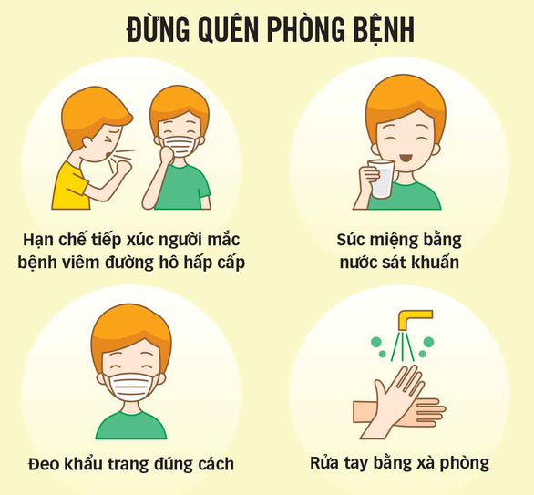

RỬA TAY THƯỜNG XUYÊN:
Thường xuyên và kỹ lưỡng làm sạch tay của bạn bằng một bàn tay có cồn hoặc rửa tay bằng xà phòng
và nước để diệt virus có thể có trên tay bạn.
TRÁNH TIẾP XÚC GẦN VỚI NGƯỜI KHÁC:
Duy trì khoảng cách ít nhất 1 mét giữa bạn và bất cứ ai xung quanh, đặc biệt khi họ đang ho hoặc hắt hơi
vì khi ai đó ho hoặc hắt hơi, họ phun những giọt chất lỏng nhỏ từ mũi hoặc miệng có thể chứa virus. Nếu bạn
ở quá gần, bạn có thể hít vào những giọt nước, bao gồm cả virus Corona nếu người ho bị bệnh.
TRÁNH CHẠM VÀO MẮT MŨI MIỆNG:
Tay chạm vào nhiều bề mặt và có thể nhiễm virus. Sau khi bị ô nhiễm, tay có thể truyền virus sang mắt,
mũi hoặc miệng của bạn. Từ đó, virus có thể xâm nhập vào cơ thể bạn và có thể khiến bạn bị bệnh.
ĐI KIỂU TRA TẠI CÁC CƠ SỞ Y TẾ NẾU CÓ CÁC TRIỆU TRỨNG:
Ở nhà nếu bạn cảm thấy không khỏe. Nếu bạn bị sốt, ho và khó thở, hãy đi khám và thực hiện theo các
hướng dẫn của cơ quan y tế địa phương của bạn để cách ly, tránh lây nhiễm ra cho người khác nếu chẳng
may bị nhiễm virus.
LƯU Ý:
Nếu bạn đã từng hoặc vừa trở về từ vùng dịch thì cần lập túc tơi cơ sở y tể để cách ly. Hạn chế hết mức
việc tiếp xúc với người ngoài.